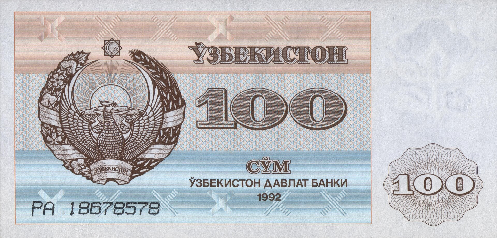

The formation of Uzbekistan's banking system: the Central Bank and the first banks (1991–1996)
Newly independent Uzbekistan had to build its own monetary and credit system out of the 'mono-bank' order inherited from the Soviet Gosbank. Between 1991 and 1996 the Central Bank was established, a two-tier system was adopted, the key laws were passed and the first national banks appeared. The article relies only on law names and dates confirmed by reliable sources; where sources differ, the information is given cautiously.

Having gained independence on 1 September 1991, Uzbekistan had to build a national monetary and credit system alongside its other state structures — previously all banking was run through the State Bank of the USSR (Gosbank) in Moscow. Between 1991 and 1996 the Central Bank was established, the single-tier Soviet order gave way to a two-tier system, the key laws were passed and the first national banks emerged. Below, this process is set out based only on law names and dates confirmed by two or more reliable sources; where sources give different dates (for example the exact founding day of certain banks), this is noted separately (Source: Central Bank of Uzbekistan — history of the banking system; Wikipedia — Central Bank of Uzbekistan).
The Soviet 'mono-bank' system
Under the USSR, Uzbekistan had no sovereign banking institutions — only republican branches of the all-Union system. At the center of the system stood Gosbank (the State Bank of the USSR), which combined central-bank and commercial-bank functions in one. Alongside it worked the Soviet specialized banks: Promstroybank (industrial and construction lending), Agroprombank (agriculture), Sberbank (household savings) and Vneshekonombank/Vneshtorgbank (foreign trade). After independence, the Uzbek republican branches of these Soviet banks became the basis of the independent state's banks: the Uzbek Gosbank department became the Central Bank, and the branches of the specialized banks were turned into the first commercial and state banks (Source: World Bank — New Banks in the Former Soviet Union; Wikipedia — Central Bank of Uzbekistan; ResearchGate — Banking Sector Development in Uzbekistan).
The Central Bank and the key laws
The Central Bank of the Republic of Uzbekistan traces back to 1991 — it was reorganized on the basis of the Uzbek Gosbank department; its first chairman, Fauzulla Mulladzhanov, served from 1991 to 2017, consistent with a 1991 origin. The legal basis took shape step by step. First, on 15 February 1991, the Law 'On Banks and Banking Activity' was adopted, creating the legal basis for a two-tier system and a central bank. Later, on 21 December 1995, the Oliy Majlis adopted the Law 'On the Central Bank of the Republic of Uzbekistan', which set the Central Bank's modern status, independence, goals and powers. Finally, on 25 April 1996, a new Law 'On Banks and Banking Activity' was adopted, updating the 1991 law and defining the second tier — the commercial banking system. An important clarification: there are two laws of the same name (15 February 1991 and 25 April 1996), and they should not be confused. The Central Bank's functions are issuing the som (emission), conducting monetary policy and supervising the commercial banks (Source: Central Bank of Uzbekistan — history; Eurasian Research Institute; Wikipedia — Central Bank of Uzbekistan).

The move to a two-tier system
The single-tier Soviet Gosbank structure was replaced by a two-tier system: the Central Bank in the first tier and commercial banks in the second. This transition began on the basis of the Law 'On Banks and Banking Activity' of 15 February 1991, and sources place the practical transition in 1991–1992. In this way the central-bank functions (emission, supervision, monetary policy) were separated from the commercial (lending) functions — the defining feature of a modern market-economy banking system (Source: World Bank — New Banks in the Former Soviet Union; ResearchGate — Banking Sector Development in Uzbekistan).
The first major banks
Most of the first national banks were created on the basis of the Soviet specialized banks. The National Bank for Foreign Economic Activity (NBU) was created in 1991 by decree of President Islam Karimov — the largest bank in the system, descending from the foreign-trade banks (Vneshekonombank/Vneshtorgbank). (Note: sources differ on the exact day — the NBU's own material gives 7 September 1991, while some lists give 25 October; it is therefore more accurate to say simply '1991'.) On the basis of the Sberbank branch the household savings bank — the People's Bank (Xalq Bank) — took shape (its present successor was incorporated as a legal entity in 1993, though the savings-bank lineage is older). On the basis of the Agroprombank branch came Pakhta Bank, which lends to agriculture (founded in 1991, turned into a joint-stock company in 1995, later Agrobank), and on the basis of Promstroybank came the industrial-construction bank Uzpromstroybank (today SQB). In 1995–1996, Asaka Bank was created to finance the UzDaewoo automobile project (sources date it to late 1995 or early 1996). Because the exact days of these banks differ in some sources, the founding year is given above (Source: National Bank of Uzbekistan — About the Bank; Wikipedia — National Bank of Uzbekistan; List of banks in Uzbekistan).
The som and the emission function
The formation of the banking system is closely tied to the national currency — the som: in November 1993 the transitional som-coupon, and on 1 July 1994 the permanent som, were put into circulation (1 som = 1,000 som-coupons). It was the 1994 introduction of the som that gave the Central Bank the sovereign emission function — the sole right to issue currency — and was a key stage in forming an independent banking system. (Because the history of the som's introduction is the subject of a separate article, only the aspect connected to the Central Bank's emission function is noted briefly here.) (Source: Central Bank of Uzbekistan — history; Wikipedia — Uzbekistani soʻm.)
The early challenges
The first years of independence passed under harsh macroeconomic conditions. Inflation reached about 1,100 percent in 1993 and about 270 percent in 1994 (hyperinflation). Although full convertibility of the som was promised in July 1995, a balance-of-payments deficit in 1996 led the government to impose foreign-exchange restrictions — restrictions that persisted for years afterward. Another feature was state-directed lending: the banks (especially the NBU and Pakhta Bank) largely served as channels for state credit to priority sectors (cotton, industry), and reform was gradual and under state control; EBRD transition reports consistently rated Uzbekistan a slow mover on banking reform (Source: RFE/RL — Uzbekistan: Currency Restrictions; Eurasian Research Institute; EBRD transition reports).
Why this matters
Establishing the Central Bank, moving to a two-tier structure, the laws of 1991/1995/1996, a sovereign emission currency (the som) and building national banks out of the former Gosbank apparatus were the financial expression of building an independent state: monetary sovereignty passed from the Gosbank in Moscow to Tashkent, and Uzbekistan gained its own emission, monetary policy, supervision and credit institutions. In this article all law names and dates rely only on reliable sources; where the sources differ (such as the two laws of the same name, or the exact day of certain banks) the information was deliberately given in cautious form, and no unverified information was added.

Sources
- Central Bank of the Republic of Uzbekistan — History of the Banking System
- Wikipedia — Central Bank of Uzbekistan
- Wikipedia — National Bank of Uzbekistan
- National Bank of Uzbekistan (NBU) — About the Bank
- Wikipedia — List of banks in Uzbekistan
- World Bank — New Banks in the Former Soviet Union: How Do They Operate
- Eurasian Research Institute — Banking Reforms in Uzbekistan and their Impact on the Country's Economy
- RFE/RL — Uzbekistan: Currency Restrictions Surprise Experts